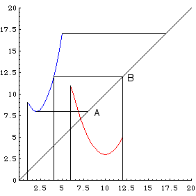

|  |
| Range of f is [8,17]; domain of g is [6, 12]. |
| (Domain of g) intersect (Range of f) on the diagonal is AB. |
| Project AB horizontally to the graph of f. |
| (x - 2)2 + 8 = 9 implies x = 1. |
| (x - 2)2 + 8 = 12 implies x = 4. |
| Then project vertically to the x-axis. |
| The domain of g(f) is [1,4]. |
Return to Examples.